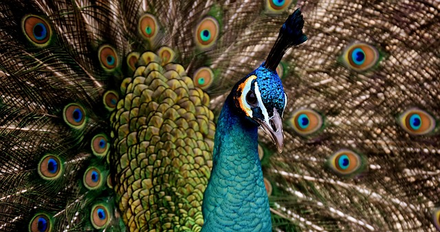
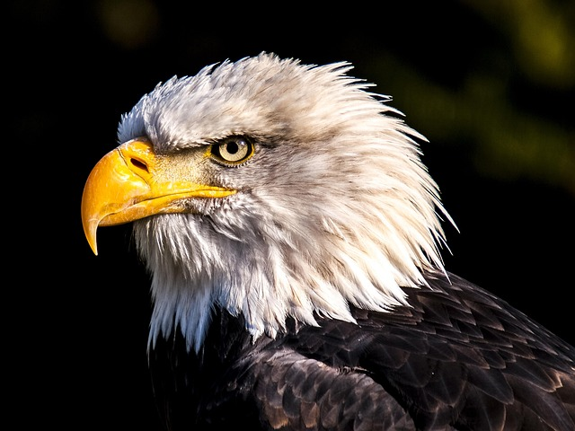
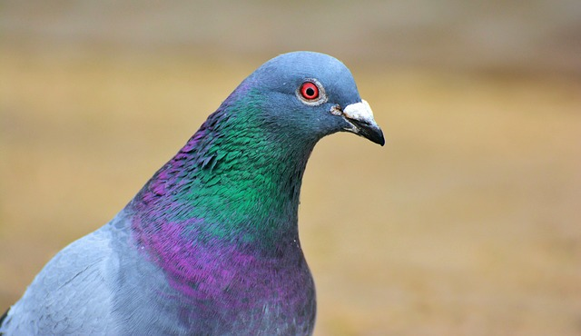
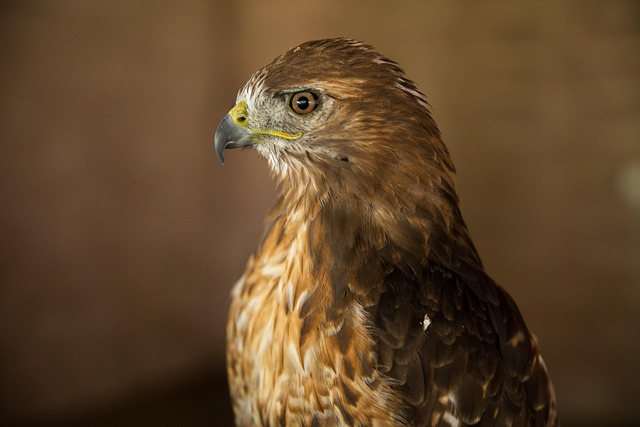
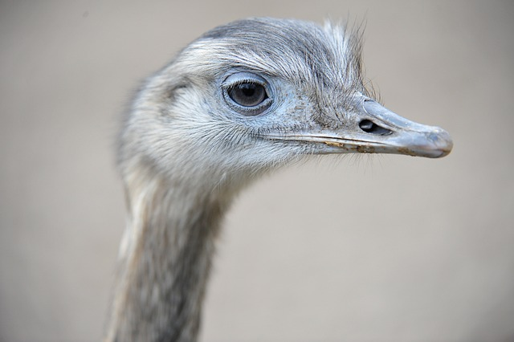
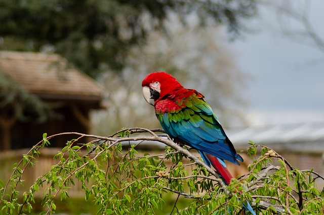
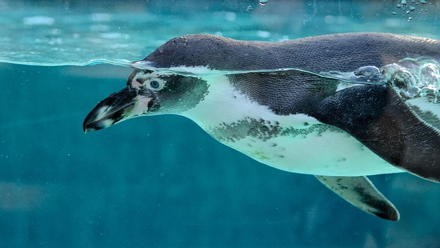
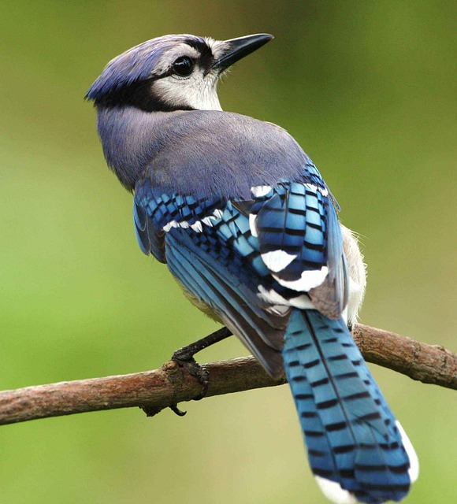

On this website you can see what different birds are like, how rare they are and where there from, while reading about birds you also get to know what the community is like.
My dream since I was a kid was to become a major bird watch and this is a website that i can show beats to.
My Family
Ever since I was a kid I have always wanted a pet chicken and my family didn't want one, now i can hear what different bird's sound like.
.Me
.My sister
.My father
.My mother
My Friends
I love to listen to beats and look at photos of birds with me and my friends everytime beofre we go to sleep, now everyone can hear the sounds through this website.
Jtwizzle
Justin Son
Nicholas Sulivan Friedman
smeebus
My Hobbies
I love waking up every morning and watching the sun rise and chasing my dream of becoming a dj.
My Favorite Music
I love listening to bird sounds.
My Favorite Games
Guessing bird sounds and bird watching.
A peacock is the brightly colored, iridescent-plumed male of the peafowl family, known for its spectacular, long tail feathers, or train, featuring prominent eyespots that it fans out to attract a mate. These birds are members of the pheasant family, native to India and Sri Lanka, and are recognized by their distinctive head crests. While the male is known as a peacock, the female is a peahen, which is smaller and has a drab brown and green body lacking the elaborate train. The colorful display is due to the structural properties of the feathers, not pigments, causing the iridescent colors and a shimmering effect

An "American eagle" is a bald eagle, a large bird of prey with a brown body, white head and tail, and yellow beak and feet, that serves as the national emblem and symbol of the United States. It was chosen to represent the country due to its powerful and independent nature, symbolizing strength and freedom

An "American pigeon" is not a single species, but refers to several types of pigeons and doves found in North America. The most common are the non-native Rock Pigeon and the native Mourning Dove, but historically, the now-extinct Passenger Pigeon was the most prominent

A red-tailed hawk is a large North American bird of prey (raptor) known for its broad wings, short tail, and a distinct reddish-brown tail on adults. It is a common sight in open fields, near woodlots, and even in urban areas across the continent, where it hunts small mammals, rodents, and reptiles to help control their populations. Red-tailed hawks are easily recognized by their raspy, screaming call, often heard in movies and television shows, and they play an important role in their ecosystems as top predators

A chicken is a domesticated bird, scientifically known as Gallus gallus domesticus, descended from the wild junglefowl of Asia. They are commonly raised worldwide for their meat, eggs, and feathers. Physically, they are characterized by short wings, a heavy, round body, and featherless legs, though they are poor fliers due to their build. Males are called roosters or cocks, while females are hens. Both sexes have fleshy combs on their heads and wattles on their throats, with roosters typically having more vibrant plumage and more pronounced combs and wattles
. The ostrich is the world's largest and heaviest living bird, native to Africa's savannas and deserts. Though flightless, it is the fastest two-legged animal on Earth and is known for its remarkable speed and powerful kick.

. Parrots, also known as psittacines, are highly intelligent birds found mostly in tropical and subtropical regions across the globe, especially in South America and Australasia. Known for their colorful feathers, strong curved beaks, and remarkable ability to mimic sounds, parrots are also exceptionally social and long-livedThe Parrot

. The flamingo is an unmistakable long-legged wading bird known for its brilliant pink and red plumage, a color derived from its diet. There are six recognized species of flamingo found in wetlands, lagoons, and salt lakes across the Americas, Africa, and Eurasia
. The penguin is a group of flightless, aquatic birds native to the Southern Hemisphere. While known for their tuxedo-like black and white feathers and their distinctive waddle, they are powerfully adapted for life in the water. The 18 species of penguin range in size from the tiny little blue penguin to the majestic emperor penguin.

. The blue jay (Cyanocitta cristata) is a highly intelligent, crested songbird known for its bright blue, white, and black plumage and its noisy, assertive nature. Native to eastern and central North America, it is a member of the corvid family, which also includes crows and ravens

About me
My name is Augustine Franny Pribuss. My dream since i was a kid was to become a DJ if you scroll down you can see some of my beats! I have two cats and i love to give them cuddles, I also like to chase birds with my cats. If you were wondering what i look like this is what:
This is what i look like when im 80. LOL!!!
this is what i look like after a killer pump in the gym!
Last photo i promise!!! This is me taking a selfie on selfie sunday!